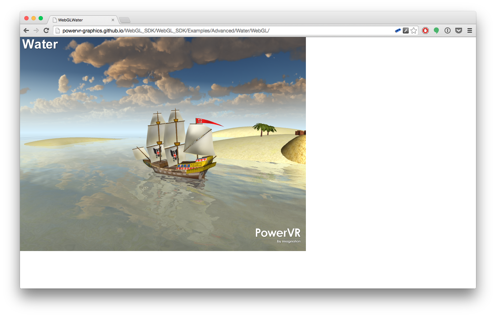

This repository contains the source code for the PowerVR Graphics WebGL SDK. Although the WebGL SDK is written from the ground up in Javascript, it retains the coding style of the native C/C++ PowerVR Graphics OpenGL ES SDK. This should make the code instantly recognisable to programmers who have used our OpenGL ES SDK before.
The WebGL SDK includes an abstraction layer that handles application life-cycle events (Shell), a 3D maths, text printing and resource loading framework (Tools), and a sub-set of the native OpenGL ES SDK's 3D graphics example applications. The SDK has been optimized for PowerVR devices, but should run efficiently on all WebGL capable phones, tablets, laptops and PCs.
Setup
Many of the WebGL Examples require the code to be hosted on a server. For demonstration purposes, we've used GitHub's Pages feature to host the WebGL SDK. If you fork the code on GitHub, you can use the same mechanism to host your modified code. If you would prefer not to use GitHub, you must host the code on your own web server.
Beginner
- 01_HelloAPI
- 02_IntroducingPVRShell
- 03_Texturing
- 04_BasicTnL
- 05_IntroducingPVRTools
- 06_IntroducingPrint3D
- 07_IntroducingPOD
Intermediate
Advanced
License
The SDK is distributed under the MIT license.